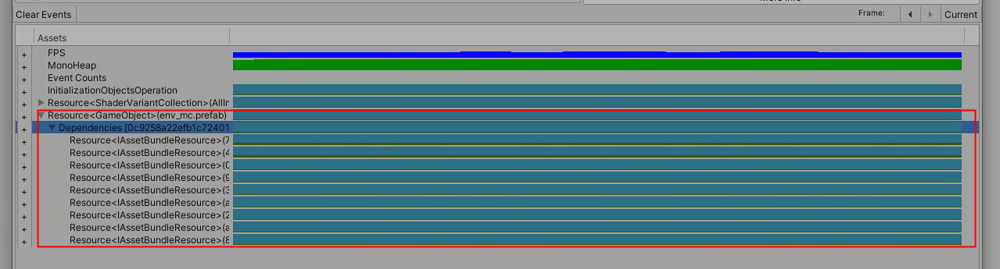
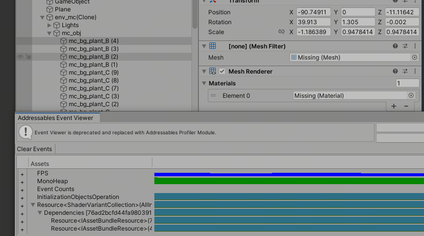
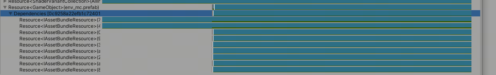
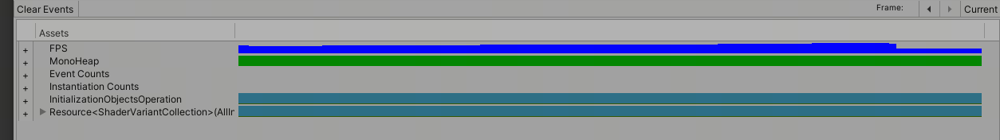

这篇文章上次修改于 225 天前，可能其部分内容已经发生变化，如有疑问可询问作者。
做一个简单的使用记录 注意:以下在Bundle方式下运转的记录 不考虑编辑器模式
Addressable的基础API 1 2 3 4 5 6 7 8 9 10 11 12 13 14 15 16 17 18 var asset = Addressables.LoadAssetAsync<T>(key); var assetObj = Object.Instantiate(asset);Addressables.Release(asset); var obj = Addressables.InstantiateAsync(key,parent); Addressables.ReleaseInstance(obj); var sceneInstance = Addressables.LoadSceneAsync(sceneName,loadMode);Addressables.UnloadSceneAsync(sceneInstance); asyncHandle.WaitForCompletion();
Addressable 支持 await async 增加 AsyncOperationHandle 对异步的支持
1 2 3 4 5 6 7 8 9 10 11 12 13 14 15 16 17 18 19 20 21 22 23 24 25 26 27 28 29 30 31 32 33 34 35 36 37 38 39 40 41 42 43 44 45 46 47 48 49 50 51 52 53 54 55 56 public static class IAsyncOperationExtensions { public static AsyncOperationAwaiter GetAwaiter (this AsyncOperationHandle operation { return new AsyncOperationAwaiter(operation); } public static AsyncOperationAwaiter <T > GetAwaiter <T >(this AsyncOperationHandle<T> operationwhere T : class { return new AsyncOperationAwaiter<T>(operation); } public readonly struct AsyncOperationAwaiter : INotifyCompletion { private readonly AsyncOperationHandle KOperation; public AsyncOperationAwaiter (AsyncOperationHandle operation ) { KOperation = operation; } public bool IsCompleted => KOperation.Status != AsyncOperationStatus.None; public void OnCompleted (Action continuation ) { KOperation.Completed += (op) => continuation?.Invoke(); } public object GetResult () { return KOperation.Result; } } public readonly struct AsyncOperationAwaiter<T> : INotifyCompletion where T : class { private readonly AsyncOperationHandle<T> KOperation; public AsyncOperationAwaiter (AsyncOperationHandle<T> operation ) { KOperation = operation; } public bool IsCompleted => KOperation.Status != AsyncOperationStatus.None; public void OnCompleted (Action continuation ) { KOperation.Completed += (op) => continuation?.Invoke(); } public T GetResult () { return KOperation.Result; } } }
加载卸载的内部计数 A.LoadAssetAsync 对应的Asset的计数+1 返回Asset资产
坑 在通过先加载资产，后自行实例化的方式调用需要注意，在这种情况下对资产进行释放后，实例化出来的物体不会被销毁，但是它用到的所有资产都会被释放掉(计数为0)

Addressable.LoadAssetAsync-Object.Instantiate

Addressable.LoadAssetAsync-Object.Instantiate-Release
在通过直接实例化资源的时候，需要注意在这种情况下释放实例化资源实例化的物体会同步被销毁

Addressable.InstantiateAsync

Addressable.InstantiateAsync-Addressables.ReleaseInstance
其他坑场景释放后再能进行同步加载 热更新完成后,加载资源报错